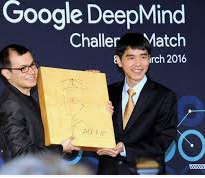

AlphaGo versus Lee Sedol, also known as the DeepMind Challenge Match, was a five-game Go match between top Go player Lee Sedol and AlphaGo, a computer Go program developed by DeepMind, played in Seoul, South Korea between the 9th and 15th of March 2016. AlphaGo won all but the fourth game; all games were won by resignation. The match has been compared with the historic chess match between Deep Blue and Garry Kasparov in 1997.
The winner of the match was slated to win $1 million. Since AlphaGo won, Google DeepMind stated that the prize would be donated to charities, including UNICEF, and Go organisations. Lee received $170,000 ($150,000 for participating in the five games and an additional $20,000 for winning one game).
After the match, the Korea Baduk Association awarded AlphaGo the highest Go grandmaster rank – an "honorary 9 dan". It was given in recognition of AlphaGo's "sincere efforts" to master Go. This match was chosen by Science as one of the runners-up for Breakthrough of the Year, on 22 December 2016.